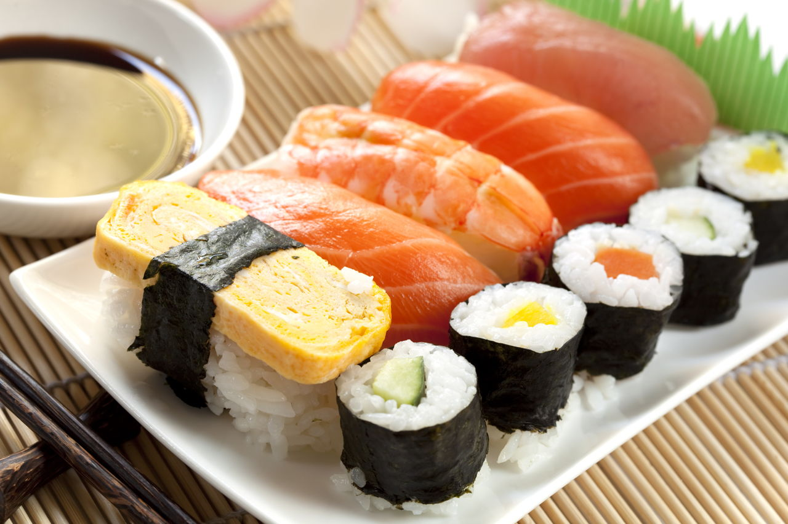

Japan日本


- 
Best known for;
Japan is known worldwide for its traditional arts, including tea ceremonies, calligraphy and flower arranging. The country has a legacy of distinctive gardens, sculpture and poetry. Japan is home to more than a dozen UNESCO World Heritage sites and is the birthplace of sushi, one of its most famous.
Culture;
Japanese cuisine encompasses the regional and traditional foods of Japan, which have developed through centuries of political, economic, and social changes. The traditional cuisine of Japan, washoku (和食), lit. "Japanese eating" (or kappō) is based on rice with miso soup and other dishes; there is an emphasis on seasonal ingredients. Side dishes often consist of fish, pickled vegetables, and vegetables cooked in broth. Seafood is common, often grilled, but also served raw as sashimi or in sushi. Seafood and vegetables are also deep-fried in a light batter, as tempura. Apart from rice, staples include noodles, such as soba and udon. Japan also has many simmered dishes such as fish products in broth called oden, or beef in sukiyaki and nikujaga.